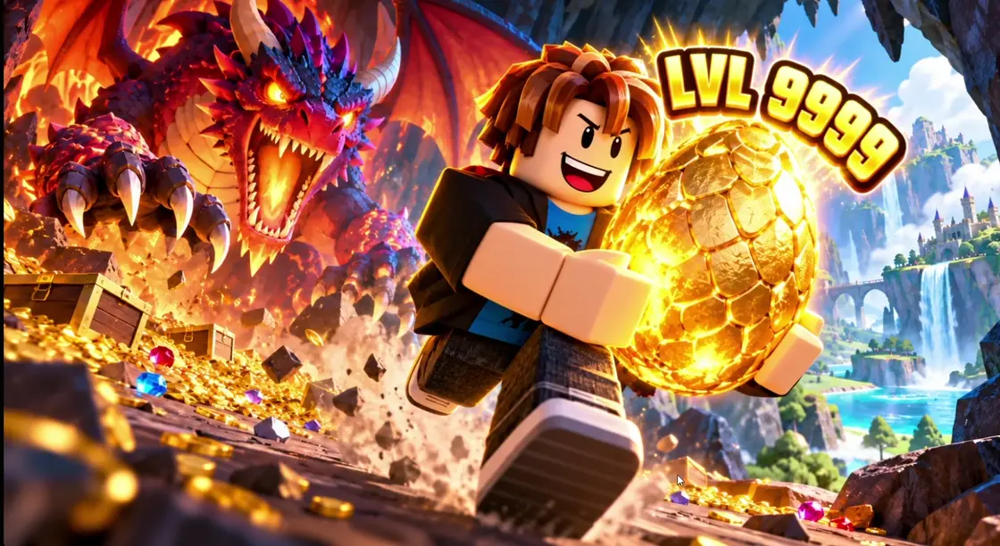
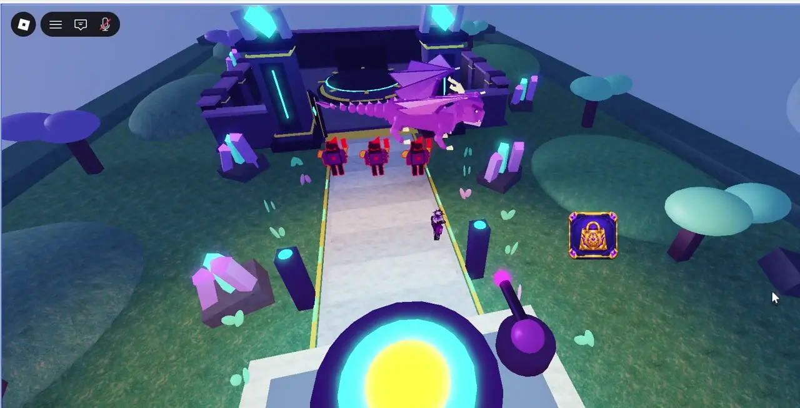
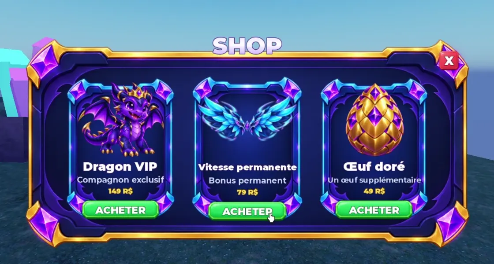

01
Décris ce que tu imagines.
Un coffre mystérieux, une animation, une boutique… Une demande claire suffit pour commencer.
« Ajoute plusieurs raretés au coffre. »↵
Un dragon qui prend vie. Une boutique qui fonctionne.
Décris ton idée, construis-la avec Forge, teste-la dans Roblox.

« Améliore l’animation du dragon. »
Du premier prototype aux derniers détails.
Voici ce qu’on construit avec Forge.

DANS ROBLOX STUDIO↗Crée une mécanique, teste-la, puis pousse ton idée plus loin.
Génère des visuels et affine-les avec tes instructions.
Assemble les images, les textes et les interactions pour créer une interface à ton image.
Voir la boutique
Icônes, objets et visuels pensés pour appartenir au même univers.
Commence petit. Teste souvent.
Chaque demande fait avancer ton projet.
Un coffre mystérieux, une animation, une boutique… Une demande claire suffit pour commencer.
Forge réunit tes outils pour créer les scripts, les modèles et les visuels de ton projet.
Teste dans Roblox Studio. Demande une correction, ajoute un détail et publie quand ton jeu est prêt.
Et c’est là que tout devient intéressant.
Forge t’aide à passer de l’idée au prototype, puis du prototype à un jeu qui te ressemble. Tu apportes les choix, les tests et la créativité. L’IA t’aide à avancer.
Une licence Forge à vie pour construire, expérimenter et continuer à améliorer tes créations.
Les abonnements et consommations des fournisseurs IA sont séparés. La licence Forge n’inclut pas leurs crédits.
Un paiement. Toutes les mises à jour incluses.
Paiement sur itch.io en dollars US.
Les frais de change éventuels dépendent de ta banque.
Partage ton projet, pose tes questions et propose les prochaines améliorations de Forge sur Discord.
Rejoindre la communautéLes réponses aux questions
que tu te poses.
Télécharge la version Windows ou Mac adaptée à ton ordinateur, puis achète une licence sur itch.io. Depuis ta page d’achat, utilise « Request key » pour récupérer ta clé. Reviens dans Forge et crée ton compte avec cette clé, ton email et ton mot de passe, puis confirme ton adresse email.
La licence à vie de Forge et ses mises à jour. Les abonnements IA et les consommations API éventuelles sont distincts et réglés auprès des fournisseurs que tu utilises.
Tu peux décrire tes demandes en français ou en anglais et laisser l’IA t’aider à écrire le code. Tu gardes la main sur les tests et les décisions : il faut toujours vérifier le résultat dans Roblox Studio.
Configure un agent compatible, comme Codex, avec ton propre accès. Selon tes besoins, tu peux aussi connecter des services dédiés aux images, à la 3D ou à l’audio. Blender permet de travailler sur la 3D localement. Les disponibilités et limites dépendent de chaque fournisseur.
Forge est proposé pour Windows, Mac avec puce Apple et Mac Intel. Il s’utilise avec Roblox Studio. Le site peut être consulté sur téléphone, mais l’application Forge et Roblox Studio nécessitent un ordinateur.
Forge peut accélérer la création d’un prototype et de ses systèmes. Un jeu abouti demande ensuite des idées, du travail, des tests et des améliorations. Aucun succès ni revenu n’est garanti.
Windows et macOS · Licence à 49 $ US · Accès IA séparé